library(bayesrules)
library(tidyverse)
library(brms)
library(tidybayes)
# Plot stuff
clrs <- MetBrewer::met.brewer("Lakota", 6)
theme_set(theme_bw())
# Seed stuff
set.seed(1234)
BAYES_SEED <- 1234Reading notes
Conjugate families
Conjugate families are neat because they let us calculate exact posteriors without difficult integration, like the beta binomial trick:
\[ \pi \mid (Y = y) \sim \operatorname{Beta}(\alpha + y, \quad \beta + n - y) \]
5.2 Gamma-Poisson conjugate family
Useful for modeling rates and counts, like fraudulent phone calls per day.
- Rate of calls per day = \(\lambda\). Any positive value.
- Number of calls per day = \(Y_i\). Any non-negative integer.
Poisson distributions
See this from program evaluation too, where I give up and say
I have absolutely zero mathematical intuition for how [\(\lambda\)] works. The two shape parameters for a Beta distribution at least fit in a fraction and you can wrap your head around that, but the lambda in a Poisson distribution is just a mystery to me.
In general, as the rate of events \(\lambda\) increases…
- the typical number of events increases,
- the variability increases, and
- the skew decreases
expand_grid(y = 0:12, lambda = c(1, 2, 5)) %>%
mutate(density = dpois(y, lambda)) %>%
ggplot(aes(x = y, y = density)) +
geom_col() +
facet_wrap(vars(lambda),
labeller = as_labeller(function(x) glue::glue("Poisson(λ = {x})")))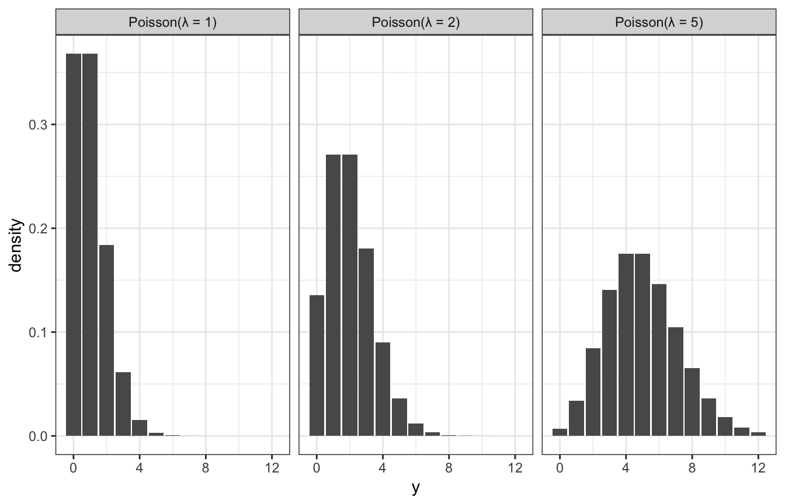
Gamma distributions
Gamma models are positive and right skewed, and conjugate to Poisson. They take two hyperparameters: \(s\) (shape) and \(r\) (rate). Exponential models are Gammas with \(s = 1\).
expand_grid(y = seq(0, 7, length.out = 1001), s = c(1, 2, 4), r = c(1, 2)) %>%
mutate(density = dgamma(y, shape = s, rate = r)) %>%
mutate(panel_name = glue::glue("Gamma(s = {s}, r = {r})"),
panel_name = fct_inorder(panel_name)) %>%
ggplot(aes(x = y, y = density)) +
geom_area() +
facet_wrap(vars(panel_name), dir = "v", nrow = 2)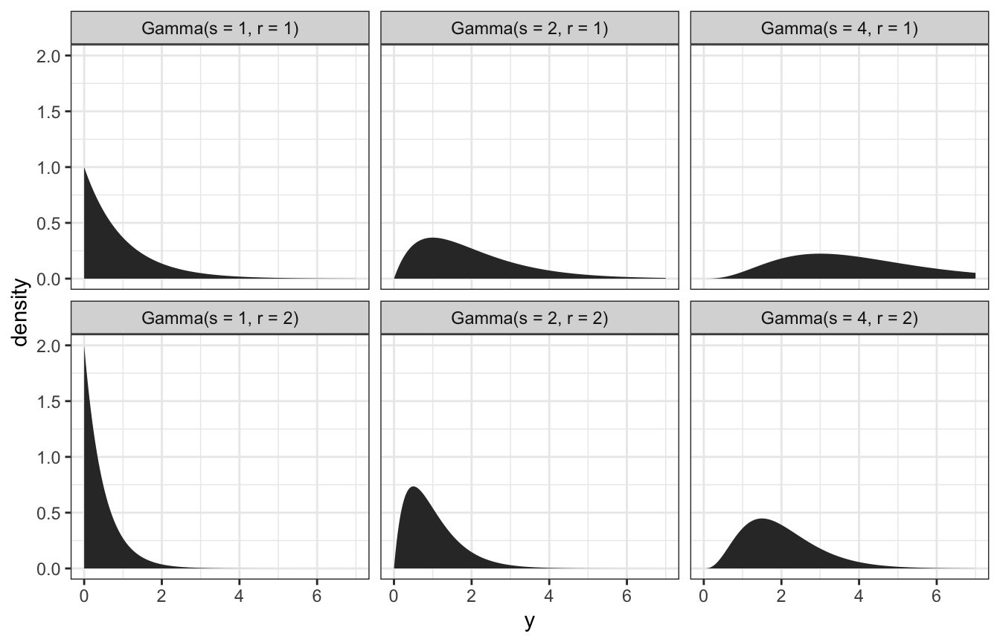
Tuning the gamma prior: We think the rate of calls is 5 a day, with a range of 2–7ish. Through trial and error, it looks like \(\lambda \sim \operatorname{Gamma}(10, 2)\) fits that well:
ggplot() +
geom_function(fun = ~dgamma(., shape = 10, rate = 2)) +
xlim(c(0, 15)) +
labs(x = "λ")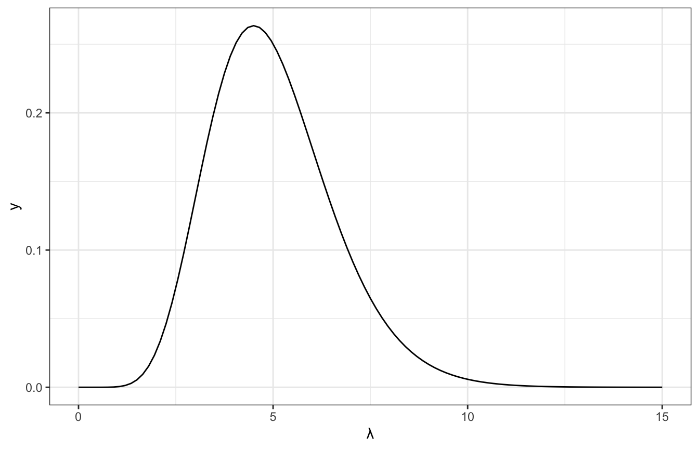
Gamma-Poisson conjugacy
Gamma and Poisson families work together like Beta and binomial!
Model:
\[ \begin{aligned} Y_i \mid \lambda &\stackrel{\text{ind}}{\sim} \operatorname{Poisson}(\lambda) \\ \lambda &\sim \operatorname{Gamma}(s, r) \end{aligned} \]
And the magical posterior based on the two distributions’ conjugacy:
\[ \lambda \mid y \sim \operatorname{Gamma}(s + \sum y_i,\quad r + n) \]
And summary statistics:
\[ \begin{aligned} E(\lambda) &= \frac{s}{r} \\ \operatorname{Mode}(\lambda) &= \frac{s - 1}{r} \\ \operatorname{Var}(\lambda) &= \frac{s}{r^2} \\ \operatorname{SD}(\lambda) &= \sqrt{\frac{s}{r^2}} \end{aligned} \]
Time to try it!
We’ll assume that the daily rate of calls \(\lambda\) is distributed with \(\operatorname{Gamma}(10, 2)\). Over 4 days, we receive 6, 2, 2, and 1 calls. That’s an \(n\) of 4 and a \(\sum y_i\) of (6 + 2 + 2 + 1), or 11, and an average of \(\frac{11}{4}\), or 2.75.
The posterior model is then the \(\operatorname{Gamma}(10, 2)\) prior mixed with the likelihood in fancy conjugate-y ways:
\[ \begin{aligned} \lambda \mid y &\sim \operatorname{Gamma}(s + \sum y_i,\quad r + n) \\ \lambda \mid (6, 2, 2, 1) &\sim \operatorname{Gamma}(10 + 11,\quad 2 + 4) \\ &\sim \operatorname{Gamma}(21, 6) \end{aligned} \]
This new data changes our understanding of the rate of calls per day:
\[ \begin{aligned} E(\lambda) &= \frac{10}{2} = 5 \text{ calls a day, from prior} \\ E[\lambda \mid (6, 2, 2, 1)] &= \frac{21}{6} = 3.5 \text{ calls a day, from posterior} \end{aligned} \]
\[ \begin{aligned} SD(\lambda) &= \sqrt{\frac{10}{2^2}} = 1.581 \\ SD[\lambda \mid (6, 2, 2, 1)] &= \sqrt{\frac{21}{6^2}} = 0.764 \end{aligned} \]
And here’s what that looks like:
ggplot() +
stat_function(fun = ~dgamma(., shape = 10, rate = 2),
geom = "area", aes(fill = "Gamma(10, 2) prior"), alpha = 0.75) +
stat_function(fun = ~dgamma(., shape = (10 + 11), rate = (2 + 4)),
geom = "area", aes(fill = "Gamma(21, 6) posterior"), alpha = 0.75) +
xlim(c(0, 15)) +
scale_fill_manual(values = clrs[5:6])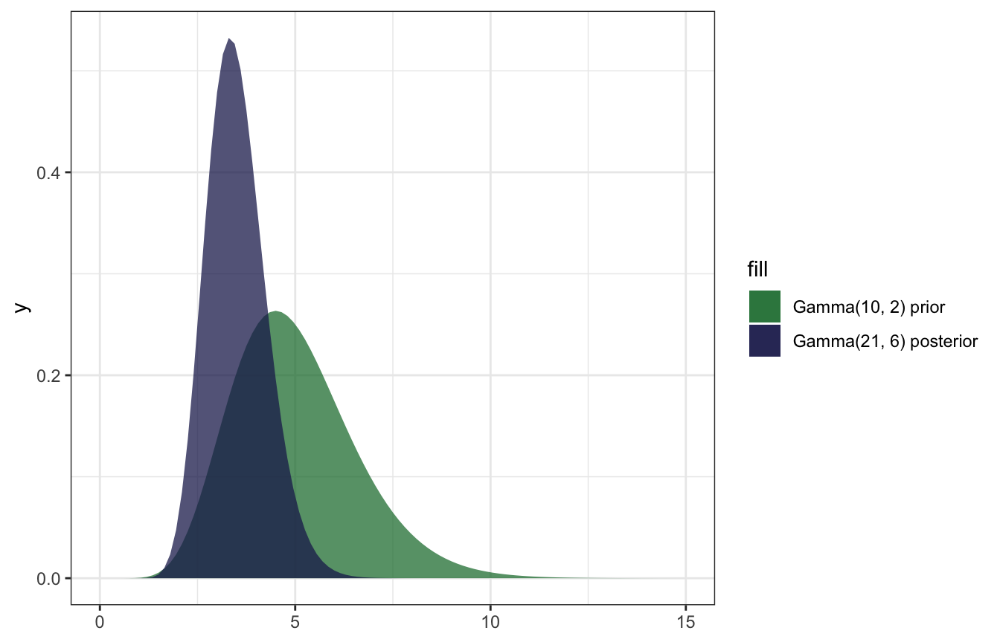
And confirming with the summarize_gamma_poisson() helper function:
summarize_gamma_poisson(shape = 10, rate = 2, sum_y = 11, n = 4)
## model shape rate mean mode var sd
## 1 prior 10 2 5.0 4.500000 2.5000000 1.5811388
## 2 posterior 21 6 3.5 3.333333 0.5833333 0.7637626And confirming with brms, just because this conjugate prior stuff feels like dark magic:
model_rate <- brm(
bf(fraud_calls ~ 0 + Intercept),
data = list(fraud_calls = c(6, 2, 2, 1)),
family = poisson(link = "identity"),
prior = prior(gamma(10, 2), class = b, lb = 0),
iter = 5000, warmup = 1000, seed = BAYES_SEED,
backend = "rstan", cores = 4
)
## Compiling Stan program...
## Trying to compile a simple C file
## Start samplingmodel_rate %>%
spread_draws(b_Intercept) %>%
summarize(across(b_Intercept, lst(mean, sd, median, hdci = ~median_hdci(., width = 0.89)))) %>%
unnest(b_Intercept_hdci)
## # A tibble: 1 × 9
## b_Intercept_mean b_Intercept…¹ b_Int…² y ymin ymax .width .point .inte…³
## <dbl> <dbl> <dbl> <dbl> <dbl> <dbl> <dbl> <chr> <chr>
## 1 3.50 0.756 3.44 3.44 2.09 5.00 0.95 median hdci
## # … with abbreviated variable names ¹b_Intercept_sd, ²b_Intercept_median,
## # ³.intervalmodel_rate %>%
gather_draws(b_Intercept) %>%
ggplot(aes(x = .value)) +
geom_density(aes(fill = "Posterior"), color = NA, alpha = 0.75) +
stat_function(geom = "area", fun = ~dgamma(., 10, 2), aes(fill = "Gamma(10, 2) prior"), alpha = 0.75) +
scale_fill_manual(values = clrs[5:6]) +
xlim(c(0, 15))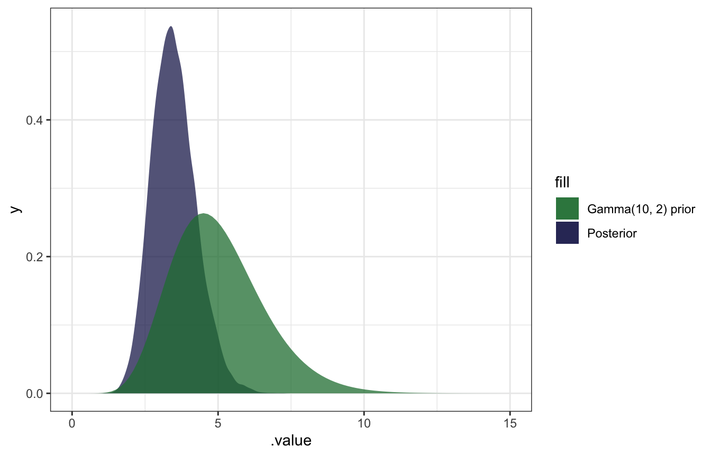
AHHH it works!
5.3: Normal-Normal conjugate family
General story here: we’re interested in \(\mu\)m or the average volume of the hippocampus. Wikipedia says that one half is between 3–3.5 cm3, so the total volume is between 6–7 cm3.
Normal distributions
Normal distribution defined with \(\mu\) and \(\sigma\) (I’ve got this intuition, but I’ll plot it anyway):
expand_grid(y = seq(-2, 10, length.out = 1001),
params = list(list(mu = 2, sigma = 0.5),
list(mu = 2, sigma = 1),
list(mu = 4, sigma = 2))) %>%
mutate(density = map2_dbl(y, params, ~dnorm(.x, .y$mu, .y$sigma))) %>%
mutate(panel_name = map_chr(params, ~glue::glue("N({.x$mu}, {.x$sigma})"))) %>%
ggplot(aes(x = y, y = density)) +
geom_area() +
facet_wrap(vars(panel_name))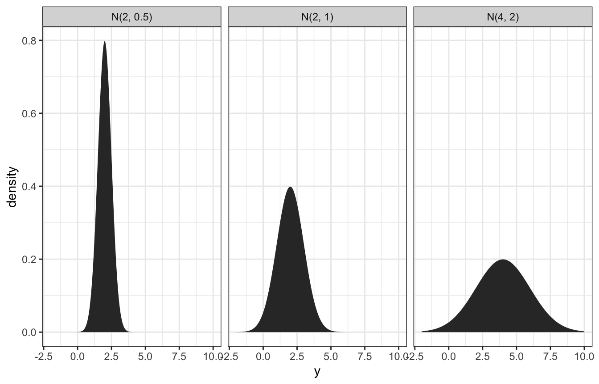
Normal prior
So, if we think the volume of the hippocampus is 6.5 cm3, ± 0.8, we can do 6.5 ± (2 * 0.4), or:
\[ \mu \sim \mathcal{N}(6.5, 0.4^2) \]
Here’s what that looks like:
ggplot() +
geom_function(fun = ~dnorm(., mean = 6.5, sd = 0.4)) +
xlim(c(5, 8))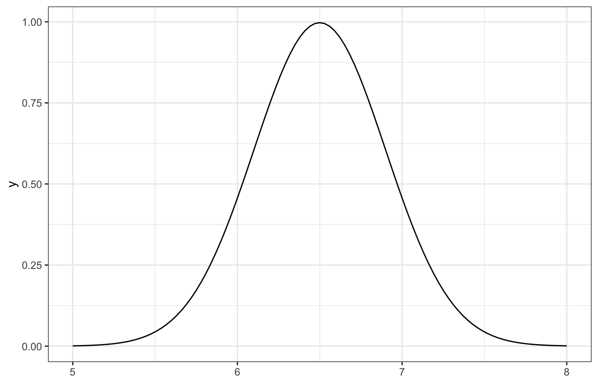
Normal-normal conjugacy
Normal-normal situations are conjugates, which means we can find exact posteriors without complex integration. This is a little more complicated than the nice easy Beta-binomial or even the Gamma-Poisson conjugates, though.
Here’s the model:
\[ \begin{aligned} Y_i \mid \mu &\stackrel{\text{ind}}{\sim} \mathcal{N}({\mu, \sigma^2}) \\ \mu &\sim \mathcal{N}(\theta, \tau^2) \end{aligned} \]
And the magical posterior:
\[ \mu \mid \vec{y} \; \sim \; \mathcal{N}\bigg(\theta\frac{\sigma^2}{n\tau^2+\sigma^2} + \bar{y}\frac{n\tau^2}{n\tau^2+\sigma^2}, \; \frac{\tau^2\sigma^2}{n\tau^2+\sigma^2}\bigg) \]
Wow that’s a mess. We need these things:
- Prior mean (\(\theta\))
- Prior sd (\(\tau\))
- Observed mean (\(\bar{y}\))
- Observed sd (\(\sigma\))
- Number of observations (\(n\))
Let’s try it with real data, with the football data from bayesrules. What’s the average hippocampus volume for football players with concussions? This is our \(\bar{y}\).
concussion_subjects <- bayesrules::football %>%
filter(group == "fb_concuss")
concussion_subjects %>%
summarize(across(volume, lst(mean, sd)))
## volume_mean volume_sd
## 1 5.7346 0.5933976In the book, they look at the distribution and figure that a standard deviation of 0.5 seems reasonable (and it’s basically that in the data too)
concussion_subjects %>%
ggplot(aes(x = volume)) +
geom_density()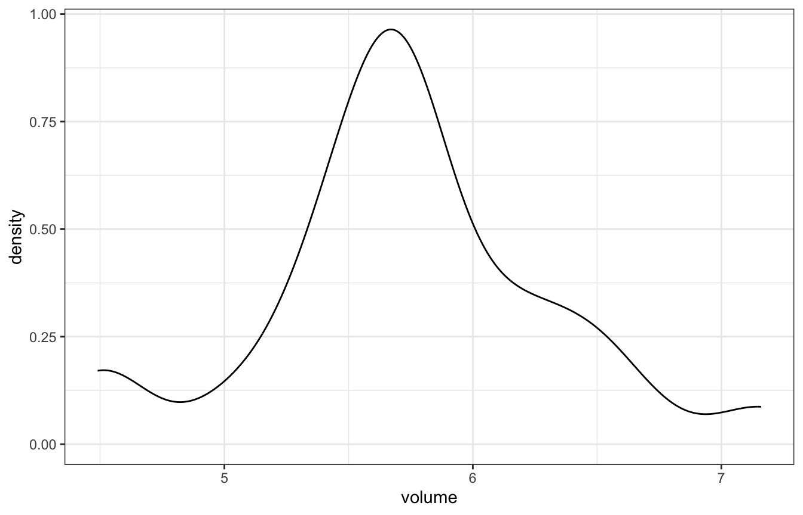
With that, we have all these pieces:
- Prior mean (\(\theta\)): 6.5
- Prior sd (\(\tau\)): 0.4
- Observed mean (\(\bar{y}\)): 5.735
- Observed (assumed) sd (\(\sigma\)): 0.5
- Number of observations (\(n\)): 25
Math time!
\[ \begin{aligned} \mu \mid \vec{y} \; &\sim \; \mathcal{N}\bigg(\theta\frac{\sigma^2}{n\tau^2+\sigma^2} + \bar{y}\frac{n\tau^2}{n\tau^2+\sigma^2}, \; \frac{\tau^2\sigma^2}{n\tau^2+\sigma^2}\bigg) \\ &\sim \; \mathcal{N}\bigg(6.5\frac{0.5^2}{25 \times 0.4^2+0.5^2} + 5.735\frac{25 \times 0.4^2}{25 \times 0.4^2+0.5^2}, \; \frac{0.4^2 \times 0.5^2}{25 \times 0.4^2+0.5^2}\bigg) \\ &\sim \; \mathcal{N}\bigg(5.78, 0.009^2\bigg) \end{aligned} \]
Or, with the summarize_normal_normal() helper function:
summarize_normal_normal(mean = 6.5, sd = 0.4, sigma = 0.5,
y_bar = 5.735, n = 25)
## model mean mode var sd
## 1 prior 6.50 6.50 0.160000000 0.40000000
## 2 posterior 5.78 5.78 0.009411765 0.09701425And here’s what that looks like:
ggplot() +
stat_function(fun = ~dnorm(., mean = 6.5, sd = 0.4),
geom = "area", aes(fill = "N(6.5, 0.4) prior"), alpha = 0.75,
n = 1001) +
stat_function(fun = ~dnorm(., mean = 5.78, sd = 0.097),
geom = "area", aes(fill = "N(5.78, 0.097) posterior"), alpha = 0.75,
n = 1001) +
xlim(c(5, 8)) +
scale_fill_manual(values = clrs[6:5], guide = guide_legend(reverse = TRUE))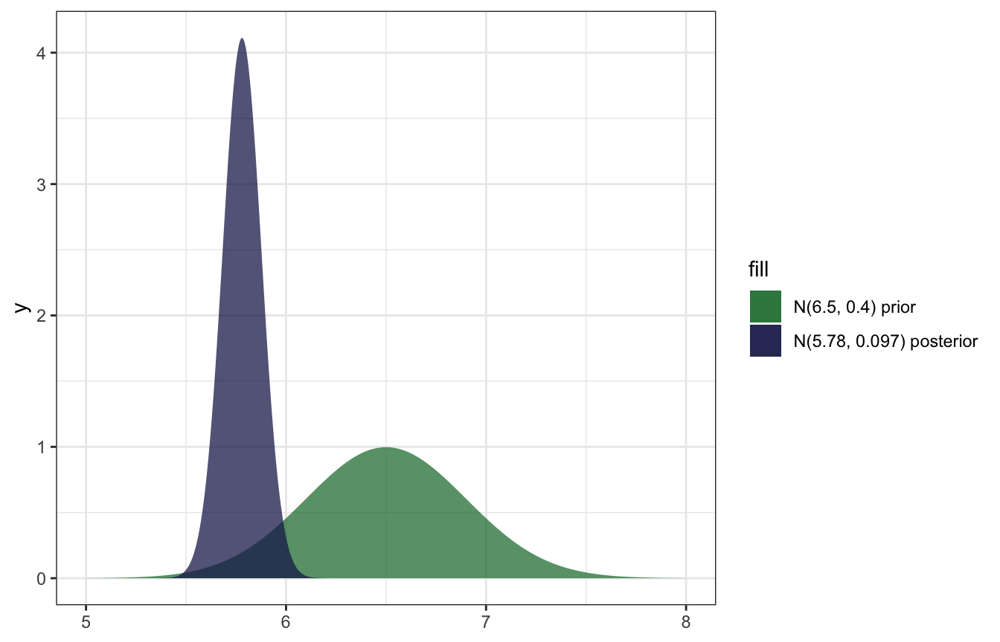
And confirming with brms:
model_volume <- brm(
bf(volume ~ 0 + Intercept),
data = concussion_subjects,
family = gaussian(),
prior = prior(normal(6.5, 0.4), class = b),
iter = 5000, warmup = 1000, seed = BAYES_SEED,
backend = "rstan", cores = 4
)
## Compiling Stan program...
## Trying to compile a simple C file
## Start samplingmodel_volume %>%
spread_draws(b_Intercept) %>%
summarize(across(b_Intercept, lst(mean, sd, median, hdci = ~median_hdci(., width = 0.89)))) %>%
unnest(b_Intercept_hdci)
## # A tibble: 1 × 9
## b_Intercept_mean b_Intercept…¹ b_Int…² y ymin ymax .width .point .inte…³
## <dbl> <dbl> <dbl> <dbl> <dbl> <dbl> <dbl> <chr> <chr>
## 1 5.80 0.124 5.80 5.80 5.57 6.05 0.95 median hdci
## # … with abbreviated variable names ¹b_Intercept_sd, ²b_Intercept_median,
## # ³.intervalmodel_volume %>%
gather_draws(b_Intercept) %>%
ggplot(aes(x = .value)) +
geom_density(aes(fill = "Posterior"), color = NA, alpha = 0.75) +
stat_function(geom = "area", fun = ~dnorm(., 6.5, 0.4), aes(fill = "N(6.5, 0.4) prior"), alpha = 0.75) +
scale_fill_manual(values = clrs[5:6]) +
xlim(c(5, 8))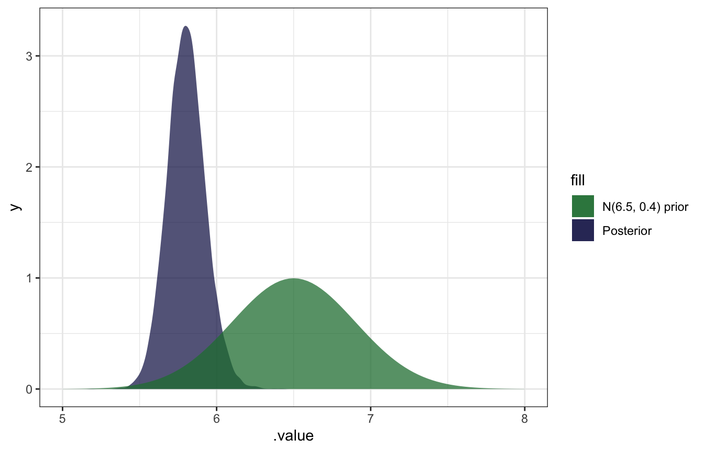
SO COOL.
Overriding the observed sd with an assumed sd
BUT that’s not actually correct because it’s using the actual observed standard deviation (0.5934) instead of the assumed standard deviation (0.5) from the conjugate calculation earlier. I can’t figure out how to override brms’s sd, but we can use raw Stan:
normal_normal.stan:
data {
int<lower = 1> N; // Number of observations
vector[N] volume; // Observed hippocampus volumes
real volume_sd; // Assumed sd of hippocampus volumes
}
parameters {
real mu; // Posterior average hippocampus volume
}
model {
// Prior
mu ~ normal(6.5, 0.4);
// Likelihood
volume ~ normal(mu, volume_sd);
}model_volume_stan <- rstan::sampling(
normal_normal,
data = list(volume = concussion_subjects$volume,
volume_sd = 0.5,
N = nrow(concussion_subjects)),
iter = 5000, warmup = 1000, seed = BAYES_SEED, chains = 4
)The results are basically identical to the math-based version!
model_volume_stan %>%
spread_draws(mu) %>%
summarize(across(mu, lst(mean, sd, median, hdci = ~median_hdci(., width = 0.89)))) %>%
unnest(mu_hdci)
## # A tibble: 1 × 9
## mu_mean mu_sd mu_median y ymin ymax .width .point .interval
## <dbl> <dbl> <dbl> <dbl> <dbl> <dbl> <dbl> <chr> <chr>
## 1 5.78 0.0978 5.78 5.78 5.59 5.98 0.95 median hdcisummarize_normal_normal(mean = 6.5, sd = 0.4, sigma = 0.5,
y_bar = 5.735, n = 25)
## model mean mode var sd
## 1 prior 6.50 6.50 0.160000000 0.40000000
## 2 posterior 5.78 5.78 0.009411765 0.09701425And the distribution is the same too:
model_volume_stan %>%
gather_draws(mu) %>%
ggplot(aes(x = .value)) +
geom_density(aes(fill = "Posterior"), color = NA, alpha = 0.75) +
stat_function(geom = "area", fun = ~dnorm(., 6.5, 0.4), aes(fill = "N(6.5, 0.4) prior"), alpha = 0.75) +
scale_fill_manual(values = clrs[5:6]) +
xlim(c(5, 8))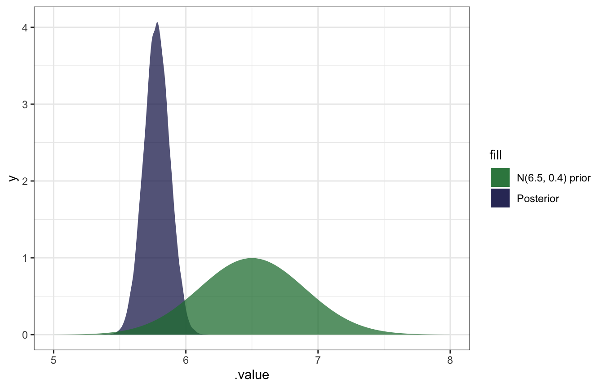